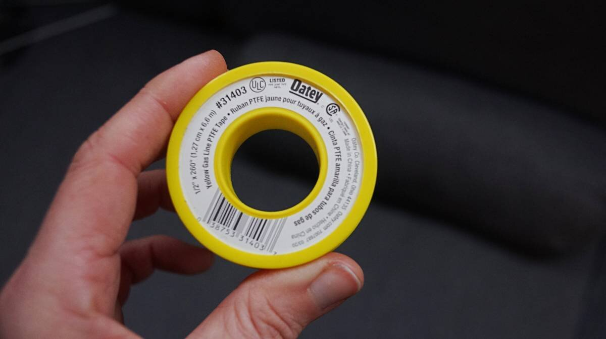

gimballed stove
2024.02.06
Victoria, BC.
- Propane Burner Layer
- To Gimbal or Not to Gimbal?
- DIY Gimbal
- LPG connections
- LPG Fume Detection System
- Mistakes
Single LPG burners are not common, but a local marine store found us a European model with a converter(+15$) for the LPG connection(North American standards differ). The unit was 400$, but we paid 250$CAD because of a defect. The LPG components are fine, the defect is cosmetic, the top SS plate has a slight bend to it which is easy for us to correct but difficult for a store to sell.

This burner is made by Eno, a company that has swallowed up the once Canadian-owned Force10(the makers of our former LPG stove).
Our plan for the gimballed stove was to make a stainless steel(SS)-covered surface for the burner, and to attach another layer underneath to store our heavy cast-iron square griddle, which would also serve as ballast for the gimbal(we don't use the griddle at sea).
The burner layer
A friend gave us a sheet of SS she didn't need(thank you Sarah R.), which we cut to cover a length of wood that would nest our new gimballed burner. The wood was cut to size when we built our open pantry. An all-stainless steel layer would have been nice, but thin sheets of SS aren't rigid enough to support anything unless given a solid bend, which is difficult to do by hand without the right tools, and without asking for the help of a fabricator—we're stubborn like that.
To cut the sheet of SS, we borrowed Peter's grinder because we somehow lost the locknut for ours(a replacement is on the way). Using it, we cut a hole in the SS sheet matching the size of our burner, and did the same for the wood piece that will sit underneath it.
We knew we couldn't do solid bends, but we could work the SS sheet around the wood, overlapping part of the bottom. Even if the SS is thin, bending it by hand to meet the edge of the wood requires patience. We secured the SS sheet over the wood with several adjustable clamps, then laid the side on the ground(with a mat underneath) and used the weight of our bodies to make a bend. To bend it further so that it meets the side better, we placed a block of wood over the side(over the wood and SS) and banged on it with a rubber mallet.
Apparently, it is possible to work it into a bend using just a piece of wood but we couldn't manage it(it depends on the thickness of the metal). We also used a small drill press vise, setting the mouth of the vise over the edge(someone had to hold the bottom edge of the sheet down so that it could fit in the gap) and tightening the jaws as hard as we could. The jaws force the two sides down, forcing a bend. Because the vise is not wide, we loosened it, moved it a bit further, tightened it again, then repeated this process for the whole length.

The result was a nice rounded bend. We drilled holes in the back and put in 4 screws per side to hold the metal onto the wood (the SS sheet bends over the edges and overlaps part of the bottom).
This is what the burner looks like when set into the hole. The burner is secured with 3 brackets underneath(they come with the burner when you buy it).

We re-used two aluminum rails from a former project to decorate the edges, isolating the two metals with some non-conductive material(see effect of combining dissimilar metals). Electrical insulating sleeve washers(plastic washers with a collar) are also a good idea for the SS screws. Stainless steel and aluminum are not friends. Edit: We ended up removing the aluminum rails because it added too much thickness to the sides.
Gimbal or no gimbal?
Does a sailboat stove need to gimbal? It doesn't, but it depends on many things...
- The kind of boat
a beamy heavy full-keeled boats doesn't heel as wildly as a fin-keeled racer-cruiser - Where the stove is located onboard
a stove in the centerline won't be as dramatically affected by heeling - What kind of sailor you are
people who sail on weekends, and that only ever cook when in port/at anchor, may not benefit from a gimballed stove - What kind of complexity you're willing to deal with
both fixed and gimballed stove installations both have their upsides and downsides. Gimballed stoves require more space, fixed stoves require robusts rails.
Offshore sailors have cooked without gimbals for a long time, with tricks like using tall pots, pot holders and good fiddle rails. When using tall pots, the food will lay at an angle in the pot but will not escape and risk scalding the cook.
Speaking of scalding the cook, famous sailor Lin Pardey mentioned that a stove mounted atwartships means that whoever is cooking will face fore or aft, if items spill out of a pot when heeling the food will not burn the cook—something to remember. With a fixed stove on a tippy boat, be prepared to babysit the food until it is ready.
For us, we can't store tall pots, and our sailboat is a racer/cruiser which means that it is very tippy(fin keel, tall rig), our galley is on the starboard side, we live aboard full-time, we cruise offshore and like to cook underway. Our boat came with a gimbal, we got used to cooking with one, and we both wondered if it was possible to build one ourselves. Curiosity led us to building our own.
Note that you don't have to DIY a gimbal, there are plenty of stoves(single, and double) for sale that ship with all of the necessary parts(although that is reflected in the price). Keep in mind that making a gimballed stove platform is a time-consumming and headache-inducing project.
DIY gimbal
When thinking of a gimbal design, take note that a gimballed stove ought to be able to swing anywhere from 20–40 degrees(degree of heel on a sailboat). Most stoves are gimballed for sideways movement, but not for pitching (although we've seen 1-pot designs built on a gyro that permit cooking in all conditions). In heavy weather, we eat peanut butter toasts, snack bars, or other easy ready-to-eat food until conditions improve.
We used the large surface of our 3-burner stove to store items underway, like bowls of cooked food and cups of coffee. Our new stove design will not permit this, we'll have to find another way to keep cooked food save from spills. We plan to add rails on the side of our gimballed platform to accomodate a second pair of pot holders to secure at least one other pot.
To make the gimbal, we used two thick-walled SS brackets we had lying around. Each bracket has 2 holes on one side, and 1 on the other. The design of these brackets was ideal, we wouldn't have to drill holes into thick SS, yay! Drilling into thick stainless steel is painstaking work, if you're not patient and try to hasten the process the material will only get harder, it will punish you and dull all of your expensive cobalt drill bits.
Because we couldn't re-use the holes left by the former stove, we had to make some new ones. Force10 stoves have a built-in rounded peg on each side which slide into a wall bracket, the pegs rest into a hole, and the oven is held down by its own weight. This design is flawed. If the boat is rolled in a storm there is a chance that the heavy oven can leap out of its spot. For our little burner, we used 2 heavy hex bolts to create the fixed rotation point for the gimbal(like the pegs for the Force10 oven). The hex bolts will go through both brackets, ensuring that the burner stays put.
We used 4 long hex bolts to secure the top and lower layer of our gimballed platform. The hex bolts go through the first layer, through short lengths of SS tubing (off-cuts from another project), through the lower layer and are terminated by washers and nuts. The SS tubing keeps the two layers separate. This design permits plenty of air to flow below and around the burner, which is essential for an LPG appliance, the area below a drop-in burner like ours should NOT be closed in.

We added washers between the wall and the SS bracket,to space it away from the wall on both sides. The right side of the stove is a thin sheet of SS overlaid over fibreglass, we added a piece of wood behind the wall to strengthen it, and terminated the connection by a washer and a nut.
LPG connections
When putting propane systems together, components ought to be in the following order:
- [1] LPG tank
- [2] Pigtail hose to pressure gauge, or gauge directly on tank
The gauge isn't there to indicate the level of the gas in the tank, the weight the of tank determines that. The gauge is a way to detect leaks the system. - [3] High-pressure 12V solenoid
A high-pressure solenoid is ideal because it shuts off the gas upstream of the regulator and the rest of the system, they're better quality than low pressure solenoids. - [4] Two stage regulator
Reduces the pressure from 250 psi(tank side, varies widely with temperature) to 11″WC in the gas line to the appliance. - [5] Flexible gas line Goes inside the boat and over to the propane appliance. Protect the line with bit of hose where it could chafe.
See more information about putting an LPG system together in lpg refit.
The solenoid is in turn wired back to a control panel near the galley, placed not too close to the appliance itself. The control panel acts as a switch for the solenoid, and a sensor(propane sniffer, placed near the appliance on the floor) will shut off the system if it detects a leak. The control panel is turned on and off via a circuit breaker.
The burner we bought is a drop-in, typically affixed to something that won't move, so unlike most gimballed stoves the fitting for the propane is horizontal (our former gimballed stove had a vertical fitting). This matters because a propane hose that exits horizontally will add weight to the back of the stove, messing up the balance of the platform. To fix this, we added a longer loop behind the stove, and we had to add a support bracket for the hose to relieve pressure on the fitting.
A stove with a converter like ours isn't ideal because it creates more weak points in the system, but if the connections are nice and tight it's not a problem. We tested the stove and applied soapy water to the connections(see above photo) to make sure there was no leak. The soap will already create bubbles, but if there is a leak the soap bubbles will expand, if you see bubbles expanding you will have to tighten the fittings again. Make sure the soap has no ammonia. Ammonia is present in some soaps and detergents, it attacks brass fittings and in a matter of months it can cause the fittings to develop cracks and leaks.
Tightening LPG fittings "A good rule of thumb is to tighten the fitting until you feel resistance, and then give it an additional quarter to half turn with a wrench. This method will help ensure that the fitting is tight enough to prevent leaks, but not so tight as to cause damage" [Source].
Flared propane fittings shouldn't have sealant on the threads(when the flare nut is tightened, it compresses the flare fitting and creates a seal), but pipe-threaded parts of the system ought to have tape (pipe threads are tapered, they get tighter the further you screw things together but can leak around the threads, a sealant is necessary to fill the gaps and make a good seal).
For non-flared threaded connections, we chose tape that is rated for gas lines (yellow tape in Canada). Regular teflon tape for plumbing can break down overtime if used in an LPG system, it's also possible to apply gas-rated liquid/paste sealants.
We tested our little burner, and it worked great. Next on our list is to install the new propane sniffer and solenoid control panel(our control panel died summer 2023), two essential parts of an LPG system.
LPG Fume Detection System
We were hoping to replace our panel with one from the same company, but Electro Systems, a local Victoria company, doesn't exist anymore. It appears that a lot of Canadian manufacturers of marine goods are closing, or are swallowed up by larger fish. It's a shame, their products were good.
Control panels for LPG devices are not cheap, in the end we chose a Xintex Propane Fume Detector with Alarm & Solenoid(P-1BS-R). This model was on sale online for CAD$390(most models on the market cost more than this).
This model comes with a single sensor(sniffer), and with a solenoid(rated for high-pressure). We had already purchased a solenoid, so now we have two. Before it died, our former control panel caused the solenoid to rapidly switch on and off non-stop, it took a long time before we noticed it was happening (the click-clicking was faint from inside the cabin). We had concerns about whether or not this event caused damage to the unit and so figured that getting a backup solenoid was a good idea. We installed the new solenoid in the system and kept the older one as a backup.
Fume Sensor. We installed the sensor(sniffer) near the burner, on the floor in a spot protected from physical damage. LPG is heavier than air and will fall or settle if released. We installed ours on the side wall, near the floor. Our other sniffer was placed in the bilge, very far from the stove. We are not sure why the former owners thought that this was a smart place to put it, maybe because it's near the lowest point on board, where the gas might gather if there's a leak. Our thinking is that if the gas is allowed to reach that point, we're already in trouble.
Routing wires on a boat is never fun. The wire for the sniffer goes under the sink, under the galley floor, through the engine room, then up through another space to get to the control panel.
Control Panel. We installed the control panel, filling a void left by the older panel, in a bulkhead. A lot of the wood on Pino is full of holes, and covered with a variety of wooden backings. Replacing the entire wooden panel and starting from scratch is tempting, it is sometimes necessary because the size of the holes render it unusable (we did it for our breaker panel doors), but other times the wood is still good and we learn to live with the imperfections left by former instruments. It's like darning, but with wood.
"Hey, why is your control panel not centered?" Well, we're glad you asked, because it certainly isn't because we don't care(we apologize to those with symmetry and ordering OCD). We dry-fitted the wooden backing on the bulkhead, drew the circle on the wood, cut the hole using an appropriately-sized holesaw, fitted the control panel... but then realized that the large wire braid coming out of the back of the panel made it that the whole bulkhead couldn't close. For it to close, we had to move the backing a bit off-center, or make a new wooden backing. We stuck with the off-center backing, because we dislike waste more than we dislike asymmetry.
We tested the solenoid and the control panel, all work well! We are now able to control the solenoid from inside the boat again, yay!
Mistakes
We've made a few mistakes with this project, a major one is that we made the surface too wide... right now the stove can't swing past a set of aluminum rails. That is a very aggressive angle and it is unlikely that the burner will swing that far, but we may cut part of the rails to allow it to free swing. We'll test the stove this summer and make adjustments the following winter.
See our open pantry, or return to galley refit.